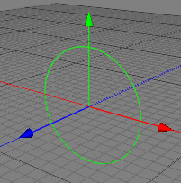

|
Circle ObjectThe circle is a parametric spline object. Whilst making use of this object, you should bear in mind that Cheetah3D uses Beziere splines to create the circle, and as such it isn't possible to create a true circle. However, the Beziere circle created by Cheetah3D comes very close to a true circle, which shouldn't present much of a problem.  Properties
|